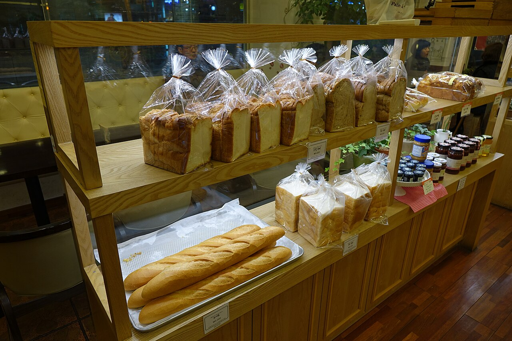
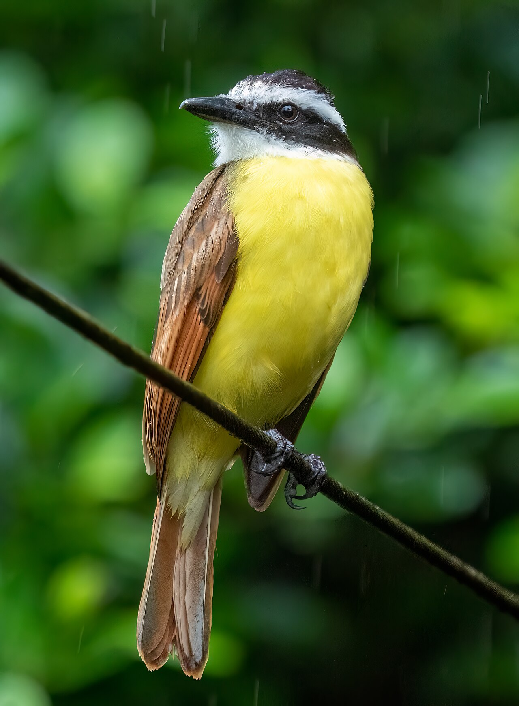
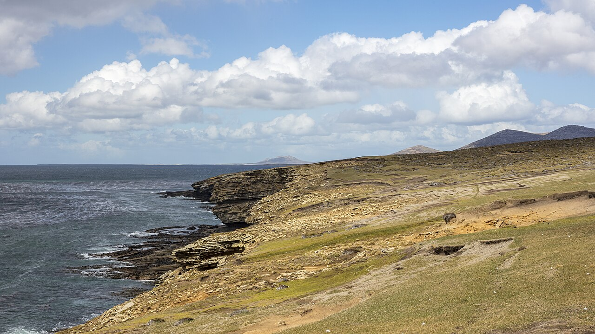

diario de la mañana — el mundo, tu ciudad y lo que te asombra
Nº 2Viernes 2 de octubre de 2026Buenos Aires≈ 35 min de lectura
Tapa: el ceibo, flor nacional, empieza a florecer en la costa del río. Más en «Mirá a tu alrededor». Foto: Prenn · CC BY-SA 3.0 · Wikimedia CommonsViernes de música
Buen día. Viernes, último empujón de la semana. Hoy la ciencia viene a nivel de colega: un paper de Cell sobre APOE4 con un mecanismo que se puede revertir, y 103 genomas de murciélagos en Nature. Y como el jueves fue Vivaldi, hoy toca su respuesta porteña: las Cuatro estaciones de Piazzolla.
9° / 17°Mañana fresca y tarde mayormente nublada, con viento del nordeste de 13 a 22 km/h. Apenas 10 % de probabilidad de lluvia a la noche. Campera a la mañana, buzo a la tarde.
Inundaciones en Tailandia, una avalancha en el Himalaya y una pelea inesperada entre aliados
TailandiaLas peores inundaciones en Bangkok en quince años
El Chao Phraya, el río que atraviesa Bangkok. Foto: Grendelkhan · CC BY-SA 3.0 · Wikimedia Commons
Hay agua en 30 provincias y en la capital: más de 3,3 millones de personas y 1,17 millones de hogares afectados, al menos 24 muertos y daños por más de 11.000 millones de baht (unos 327 millones de dólares). La causa fue la combinación de lluvias muy intensas con el agua que baja del norte. Honda frenó dos plantas del 2 al 6 de octubre porque sus proveedores están bajo el agua.
Por qué importa: Tailandia es un nodo clave de la industria automotriz y electrónica del sudeste asiático. En 2011, una inundación parecida cortó la provisión mundial de discos rígidos. La seguimos en inglés en el English corner.
NepalUna avalancha mata a 15 trabajadores en el Himlung Himal
El Himlung Himal (7.126 m), en el distrito de Manang. Foto: Michi Waerthl · CC BY-SA 4.0 · Wikimedia Commons
Los trabajadores nepalíes armaban el campamento base y fijaban cuerdas para expediciones extranjeras cuando la avalancha los sepultó. Ya se recuperaron 15 cuerpos y hay una persona desaparecida. Es el peor accidente de la temporada de otoño; los escaladores todavía no habían llegado.
Por qué importa: el trabajo más peligroso de las expediciones lo hacen sherpas y porteadores locales, mal pagos y poco asegurados. Con el retroceso de los glaciares por el cambio climático, las montañas se vuelven más inestables.
Corea del Sur · UcraniaPelea entre aliados por prisioneros norcoreanos
En la ONU, Zelenski dejó entrever que Ucrania había entregado a Seúl soldados norcoreanos capturados mientras peleaban para Rusia. El presidente surcoreano, Lee Jae Myung, exige una disculpa pública: dice que había un compromiso de confidencialidad y que las familias de los soldados en Corea del Norte quedan expuestas a represalias. Kiev lo llama un «malentendido diplomático».
Por qué importa: son dos países del mismo bloque, y la pelea complica el frente común contra Rusia, China y Corea del Norte. Además muestra algo poco conocido: hay soldados norcoreanos peleando en Europa.
GazaUn «alto el fuego» que no detiene las muertes
Un dron israelí mató a un palestino en Gaza y colonos mataron a otro en Cisjordania. Desde que empezó el alto el fuego, en octubre de 2025, murieron 1.439 palestinos y hubo 5.052 heridos, según las cifras locales.
Golfo PérsicoMás tensión entre Irán y Estados Unidos
Washington prepara el envío de un tercer portaaviones hacia Irán, mientras Teherán le pide a Irak que levante una prohibición de vuelos dictada bajo presión de las sanciones estadounidenses.
Argentina y Buenos Aires no vivir adentro de un táper
Malvinas, petróleo y un ultimátum de dos semanas
Milei abre un arbitraje internacional por el proyecto Sea Lion
El Gobierno intimó al Reino Unido a frenar en dos semanas la explotación de hidrocarburos en aguas que la Argentina reclama. Si no hay respuesta, pedirá medidas provisionales al Tribunal Internacional del Derecho del Mar (Hamburgo), en el marco de la Convención de la ONU sobre el Derecho del Mar. El yacimiento Sea Lion está en la Cuenca Norte de Malvinas, a unas 130 millas de las islas, y lo desarrollan la británica Rockhopper Exploration y la israelí Navitas Petroleum. Londres, por ahora, eligió el perfil bajo.
Para pensar: es un giro para un gobierno que había buscado acercarse al Reino Unido. Llevar el tema a un tribunal internacional cambia el terreno del reclamo: de la diplomacia a lo jurídico.
Cierre de la gira por París
Milei terminó su visita con reuniones sobre energía, minerales críticos, inteligencia artificial y comercio, y recibió el premio a la Acción Pública 2026 del Foro Económico de París.
El fondo de cese laboral, obligatorio desde noviembre
Todas las empresas con empleados en la Argentina van a tener que aportar a una cuenta privada invertida en el mercado, que funciona como fondo para despidos. Las multas por no cumplir llegan a 15 salarios mínimos.
Para hacer en la ciudad
Mafalda Inmersiva sigue en el Centro Cultural Recoleta (Junín 1930), de martes a viernes de 12 a 21.
Sábado 3, de 14 a 19: combis gratis entre Bellas Artes, el Moderno, Proa, Casa FOA, Open House y la Fundación Larivière.
Sala Lugones (Corrientes 1530): ciclo de Andrzej Wajda en copias restauradas, hasta el 14.
Ciencia nivel colega
APOE4 empuja a los pericitos a volverse miofibroblastos, y bloquear TGF-β lo revierte
El alelo ε4 de APOE es el principal factor de riesgo genético del Alzheimer de inicio tardío, y su vínculo con la disfunción vascular cerebral se conocía bien, pero no su mecanismo celular. El laboratorio de Joel W. Blanchard (Icahn School of Medicine at Mount Sinai) propone uno en Cell: APOE4 aumenta la señalización por TGF-β, lo que induce una transición de pericito a miofibroblasto. Los pericitos pierden su función de sostener los capilares y la barrera hematoencefálica, y se convierten en células productoras de matriz, αSMA⁺, que generan fibrosis vascular y favorecen el depósito de amiloide perivascular.
Diseño experimental
Cerebro humano post mortem: evidencia de la transición en portadores de APOE4.
Ratones APOE-TR (targeted replacement, con APOE humano knock-in), APOE3 frente a APOE4, envejecidos.
miBrains: tejido cerebral vascularizado derivado de iPSC humanas, con genotipo APOE3 o APOE4 isogénico, para aislar el efecto del alelo.
Intervención: inhibición química de TGF-β en miBrains APOE4 y en ratones APOE4-TR envejecidos.
Resultados: la inhibición de TGF-β redujo los miofibroblastos y la inmunorreactividad para αSMA, aumentó la cobertura pericitaria de la microvasculatura y bajó la fibrosis vascular y el amiloide perivascular a niveles de APOE3. Un segundo trabajo del mismo grupo, en Cell Stem Cell, describe cómo APOE4 altera además la eliminación de residuos del cerebro.
Lectura crítica
La reversión se mostró en modelos preclínicos (miBrains y ratones), no en personas.
TGF-β es pleiotrópico (inmunosupresión, reparación tisular, fibrosis): inhibirlo de forma sistémica y crónica tiene riesgos claros. Hará falta una inhibición dirigida a la vasculatura o a la vía aguas abajo.
Falta ver si la mejora vascular se traduce en función cognitiva y en menos patología tau.
El valor de las miBrains isogénicas es que separan el efecto del alelo del fondo genético, algo muy difícil con muestras de pacientes.
Schuldt BR, Haworth-Staines D, … Pereira AC, Blanchard JW. «A pericyte-to-myofibroblast transition links APOE4 to cerebrovascular degeneration». Cell, publicado en línea el 24/9/2026. cell.com · preprint: doi:10.1101/2025.09.04.674192
Además: 103 genomas de murciélagos reescriben su árbol
Un murciélago de herradura (Rhinolophus).
El consorcio Bat1K (Teeling, Hiller, Dávalos, Vernes, Ray y 137 investigadores de 64 países) analizó ensamblados a nivel cromosómico con lecturas largas de 103 especies, 42 de ellas nuevas, que cubren las 21 familias de quirópteros. Con esa filogenómica, calibrada con fósiles, resolvieron relaciones que estaban en disputa e identificaron qué había generado los conflictos entre los árboles anteriores.
La conclusión que más llama la atención es biogeográfica: los murciélagos se habrían originado en Europa hace unos 60 a 65 millones de años, justo después de la extinción del Cretácico. Eso descarta los orígenes asiático, africano o norteamericano que se proponían. Desde un «hub» Europa–África se habrían expandido a Asia, América y Australia.
Para tu formación: es un ejemplo de por qué los ensamblados de referencia de alta calidad (long-read, a nivel cromosómico) cambian las conclusiones evolutivas frente a los borradores fragmentados. Los murciélagos además interesan en biomedicina por su tolerancia a virus, su longevidad y su ecolocalización.
Bat1K Consortium. «Reference genomes and fossils revise bat family phylogeny and biogeography». Nature 658, 141–152 (2026). doi:10.1038/s41586-026-11007-3
Biotec en el mundo real · biosimilares hechos en Garín
Biorreactores para cultivo de células de mamífero.
mAbxience, del grupo argentino Insud, desarrolla y produce anticuerpos monoclonales biosimilares en su planta de Garín (provincia de Buenos Aires). En 2020 se hizo conocida por producir el principio activo de la vacuna contra el COVID-19 de AstraZeneca y Oxford.
Upstream: los mAbs se expresan en líneas CHO en biorreactores, generalmente en fed-batch. Las variables críticas de proceso (pH, OD, temperatura, alimentación) definen el título y también la calidad: el perfil de glicosilación afecta la función efectora (ADCC/CDC) y la vida media.
Downstream: captura por cromatografía de afinidad a proteína A, inactivación viral a pH bajo, pulido por intercambio iónico, nanofiltración viral y formulación.
Biosimilaridad: no alcanza con la misma secuencia. Se demuestra por un ejercicio de comparabilidad escalonado: caracterización analítica exhaustiva (estructura, glicoformas, variantes de carga, agregados), ensayos funcionales, PK/PD y estudios clínicos de equivalencia.
Salidas laborales: desarrollo de procesos, control de calidad analítico, validación, asuntos regulatorios y aseguramiento de la calidad (GMP).
Ciencia en la vida cotidiana · Por qué el pan se pone duro (y no es porque se seca)

El pan se endurece aunque no pierda agua. Foto: 최광모 · CC BY-SA 4.0 · Wikimedia Commons
Al hornear, el almidón se gelatiniza: los gránulos absorben agua, se hinchan y la estructura semicristalina de la amilosa y la amilopectina se desordena. Al enfriarse empieza la retrogradación: la amilosa se reorganiza en horas (eso fija la miga) y la amilopectina recristaliza en días, sobre todo en dobles hélices de sus cadenas cortas. Esa recristalización, con la redistribución de agua de la miga hacia la corteza, es lo que hace al pan duro, aunque el contenido total de agua casi no cambie.
Consecuencias prácticas: la retrogradación es más rápida a temperaturas de heladera (cerca de 4 °C), así que el pan en la heladera se pone duro antes. En el freezer, por debajo de la transición vítrea, prácticamente se detiene. Y calentar el pan duro a más de unos 60 °C funde los cristales de amilopectina: por eso un pan del día anterior revive en el horno.
Mirá a tu alrededor árbol y ave de la semana
El ceibo empieza a florecer y el benteveo grita su nombre
El ceibo, árbol de las orillas.

El benteveo, con su vientre amarillo. Foto: Rhododendrites · CC BY-SA 4.0 · Wikimedia Commons
El árbol: ceibo
Nombre científico
Erythrina crista-galli
Familia
Fabáceas (leguminosas), la misma familia que la tipa
De dónde es
Nativo del litoral y del Delta del Paraná; crece en orillas inundables
Cuándo mirarlo
Florece de octubre a abril, en varias tandas
Cómo reconocerlo
Flores rojo intenso, carnosas, con forma de cresta de gallo (de ahí crista-galli). Tronco retorcido, ramas con espinas cortas, hojas de tres folíolos.
Dato
Su flor es la flor nacional argentina desde 1942. Buscalo en la Reserva Ecológica Costanera Sur y en Palermo, cerca de los lagos.
El ave: benteveo
Nombre científico
Pitangus sulphuratus (familia Tiránidos)
Tamaño
Unos 22 cm
Cómo reconocerlo
Vientre amarillo azufre, cabeza negra con una ceja blanca ancha, espalda pardo-rojiza. Su grito suena como «bien-te-veo».
Qué come
De todo: insectos que caza al vuelo desde una percha, frutos, pequeños peces y lagartijas. Es de los pocos tiránidos que pescan.
Tu misión de hoy
Receta de estación primavera · con su química
Espárragos a la plancha con huevo poché
Primavera es temporada de espárragos. Quince minutos.
Espárragos verdes de estación.
Ingredientes (1 porción)
1 atado de espárragos verdes
1 huevo
Aceite de oliva, sal gruesa, pimienta
Ralladura de limón y queso duro rallado (opcional)
Pasos
Doblá cada espárrago: se quiebra solo donde termina la parte leñosa. Descartá la base.
Plancha o sartén bien caliente, un hilo de aceite, 4 a 6 minutos girándolos hasta que se doren.
Huevo poché: agua apenas hirviendo, un chorrito de vinagre, 3 minutos.
Huevo arriba de los espárragos, sal gruesa, ralladura de limón y queso.
La química de la receta
El dorado: reacción de Maillard entre azúcares reductores y aminoácidos libres (el espárrago es rico en asparagina, que se aisló por primera vez justamente del espárrago, en 1806). Por eso la plancha tiene que estar bien caliente: hervidos no se doran.
El vinagre en el poché: el pH ácido y la temperatura aceleran la desnaturalización y coagulación de las proteínas de la clara (ovoalbúmina, ovotransferrina), así la clara queda compacta.
El olor después: el ácido asparagúsico (un 1,2-ditiolano) se metaboliza a compuestos azufrados volátiles, como metanotiol y sulfuro de dimetilo, que aparecen en la orina. No todos pueden olerlos: hay variación genética en la percepción, asociada a la región de receptores olfativos OR2M.
Un clásico en cinco minutos literatura universal
Antón Chéjov, «La dama del perrito» (1899)
El comienzo de uno de los cuentos más imitados de la historia. Traducción nuestra del ruso, abreviada.
Antón Chéjov hacia 1898, un año antes de escribir el cuento. Foto: Unknown authorUnknown author · Public domain · Wikimedia Commons
Se decía que en la costanera había aparecido una cara nueva: una dama con un perrito. Dmitri Dmítrich Gúrov, que ya llevaba dos semanas en Yalta y se había acostumbrado al lugar, también empezó a interesarse por los recién llegados.
Sentado en el pabellón de Vernet, vio pasar por la costanera a una joven, no muy alta, rubia, con boina; detrás de ella corría un spitz blanco.
Después la encontró varias veces al día en el jardín municipal y en la plaza. Paseaba sola, siempre con la misma boina y el spitz blanco; nadie sabía quién era, y la llamaban simplemente así: la dama del perrito.
«Si está aquí sin el marido y sin conocidos», pensó Gúrov, «no estaría mal conocerla».
«Y les parecía que faltaba poco, que la solución estaba cerca; pero los dos veían que lo más difícil recién empezaba».
Para entrar al texto
De qué trata: un hombre casado y cínico tiene una aventura de vacaciones en Yalta, en Crimea, con Anna, también casada. Lo que debía ser pasajero se vuelve el amor de su vida.
El final abierto: el cuento termina sin resolver nada. Esa forma (sin moraleja, con la vida que sigue) cambió el cuento moderno: de Katherine Mansfield a Raymond Carver.
Chéjov era médico y escribía como mira un clínico: detalles mínimos, sin juzgar. Cuando escribió este cuento vivía en Yalta por la tuberculosis que lo mató a los 44 años.
Literalmente, un «ratón ciego». La forma antigua era murciégalo, y por metátesis (el cruce de sonidos que también da «cocreta» por «croqueta») quedó murciélago. La Real Academia todavía acepta murciégalo. Ni ratón ni ciego: los murciélagos no son roedores y ven bastante bien, aunque muchos se orientan por ecolocalización.
En francés es la chauve-souris (la «ratona calva») y en inglés bat, de origen escandinavo. Y si te gustan los juegos de palabras: «murciélago» tiene las cinco vocales.
Le français du matin desde cero · semana 1: saludar
Comment ça va ?
Un diálogo de cuatro líneas. Escuchalo dos veces y después leelo en voz alta.
— Bonjour, Lula ! Comment ça va ?
— Ça va bien, merci. Et toi ?
— Très bien ! Bonne journée !
— Merci, à demain !
Comment ça va ?
¿Cómo andás? [ko-MAN sa VA]
Ça va bien
Bien [sa va BIAN]
Merci
Gracias [mer-SÍ]
Et toi ?
¿Y vos? [e TUA]
Très bien
Muy bien [tre BIAN]
Bonne journée !
¡Buen día! (al despedirse) [bon yur-NÉ]
À demain !
¡Hasta mañana! [a də-MAN]
Un truco
Bonjour es para saludar al llegar; bonne journée, para despedirse durante el día. Y la «ç» con colita (cedilla) suena como «s»: ça se dice «sa».
À toi: respondé en francés.
English corner level C1 · world news
Bangkok counts the cost of its worst floods in fifteen years
As the water finally began to recede in Bangkok this week, the scale of Thailand's flooding came into sharper focus. According to the Department of Disaster Prevention and Mitigation, some 3.35 million people in 30 provinces and the capital have been affected, and at least 24 have lost their lives. Damage has already topped 11 billion baht, a figure officials concede is likely to climb.
The culprit was not a single storm but a compounding of pressures: days of torrential rain in the central plains coinciding with a surge of run-off from the north, funnelled down the Chao Phraya basin towards a capital that sits barely above sea level. For many residents, the images of submerged sois and stranded motorbikes were an unwelcome throwback to 2011, when floods brought much of the country to a standstill and sent shockwaves through global supply chains.
Those ripples are already being felt. Honda has suspended output at two Thai plants until 6 October because flood-hit suppliers cannot keep up, a reminder of how tightly the kingdom is woven into regional manufacturing. Forecasters, meanwhile, are warning against complacency: further rain is expected in the north and north-east from 4 October, and water released from upstream dams could yet put the central region back under strain.
to recede — retroceder, bajar (el agua)
to come into focus — volverse claro
to concede — admitir
compounding — suma que agrava
run-off — escorrentía
a throwback to — algo que recuerda a
to grind / bring to a standstill — paralizar
complacency — exceso de confianza
Your turn (answer in English):
Viernes de música música clásica
Las Cuatro estaciones porteñas: Piazzolla le contesta a Vivaldi
Ayer escuchaste la Primavera de Vivaldi. Hoy, la respuesta de Buenos Aires. Astor Piazzolla no las pensó como un ciclo: las escribió sueltas entre 1965 y 1970. Primero fue «Verano porteño» (1965), como música para una obra de teatro, y después llegaron otoño, invierno y primavera. Las tocaba con su quinteto: bandoneón, violín, piano, guitarra eléctrica y contrabajo.
Treinta años después, el compositor ruso Leonid Desyatnikov las arregló para violín solista y orquesta de cuerdas para Gidon Kremer, y escondió citas de Vivaldi adentro. Desde entonces se programan juntas: las ocho estaciones, dos hemisferios. Fijate que en el «Verano porteño» de esa versión aparece un fragmento del «Invierno» de Vivaldi, porque cuando en Venecia es invierno, en Buenos Aires es verano.
Guía para escuchar «Primavera porteña» (unos 6 minutos)
El comienzo: un tema rítmico que va entrando por voces, casi como una fuga. Piazzolla había estudiado con Nadia Boulanger en París y le encantaba Bach.
El centro: la música se vuelve lenta y melancólica, una melodía larga del bandoneón o del violín, muy de tango.
El final: vuelve la energía del comienzo. Para pensar: ¿suena a primavera, o a la ciudad apurada en primavera?
Mohandas Karamchand Gandhi nació en Porbandar, en la costa oeste de la India. Abogado formado en Londres, desarrolló la satyagraha, la resistencia civil no violenta, primero en Sudáfrica y después en la India contra el dominio británico. La Marcha de la Sal (1930) es su gesto más famoso. La India se independizó en 1947, y Gandhi fue asesinado meses después, en 1948. Desde 2007, la ONU celebra hoy el Día Internacional de la No Violencia.
El lugar: las islas Malvinas

Paisaje de las islas: turba, pastizales y costa. Foto: Godot13 · CC BY-SA 4.0 · Wikimedia Commons
Dónde
Atlántico Sur, a unos 500 km de la costa patagónica
Islas principales
Isla Soledad (al este) y Gran Malvina (al oeste), separadas por el estrecho de San Carlos, más unas 700 islas menores
Superficie
Unos 12.000 km², más o menos la mitad de la provincia de Tucumán
Población
Unas 3.600 personas, la mayoría en Puerto Argentino (Stanley)
Paisaje
Sin árboles nativos: turberas, pastizales, costas con pingüinos y lobos marinos
Conexión
Sea Lion está en la Cuenca Norte, al norte de las islas. Ver «Argentina y Buenos Aires».
Lo que me asombra hoy
Uno de cada cinco mamíferos es un murciélago
Hay más de 1.400 especies de murciélagos: alrededor del 20 % de todas las especies de mamíferos. Solo los roedores son más diversos. Y son los únicos mamíferos capaces de volar de verdad, batiendo las alas, no planeando.
Lo más raro es su relación con el tiempo: muchos viven mucho más de lo que su tamaño predice. Un murciélago de Brandt, que pesa menos de 8 gramos, puede vivir más de 40 años. Un ratón de tamaño parecido vive dos o tres. Por eso los genomas de Bat1K también se usan para estudiar el envejecimiento.
Pasatiempo sudoku · nivel medio
Diez minutos para la cabeza
Completá cada fila, cada columna y cada caja de 3×3 con los números del 1 al 9, sin repetir. Tiene una sola solución.
46326283316271397519753124543528
Cuaderno para repasar lo de hoy
Repaso y quiz de la mañana
Repaso de idiomas · palabras de ayer
Quiz
Según el paper de Cell, ¿en qué se transforman los pericitos por APOE4?
¿Qué vía de señalización bloquearon para revertir el efecto?
Según Bat1K, ¿dónde se originaron los murciélagos?
¿Qué paso de downstream captura los anticuerpos monoclonales?
¿Por qué se pone duro el pan?
¿Cuál es el nombre científico del ceibo?
¿Qué tribunal intervendría por Sea Lion?
«Murciélago» viene de…
¿Para quién arregló Desyatnikov las estaciones de Piazzolla?
Escritura: tres líneas para hoy
Soluciones tocá para destapardadas vuelta, para no espiar
Quiz: miofibroblastos · TGF-β · en Europa · afinidad a proteína A · retrogradación de la amilopectina · Erythrina crista-galli · Tribunal Internacional del Derecho del Mar · «ratón» + «ciego» · Gidon Kremer.
Repaso: aujourd'hui · le matin · je bois un café · una tarea difícil · diluir, suavizar · tener el control de.
Français: Ça va bien, merci. Et toi ? · À demain !
English 1: because several factors combined: heavy rain in the central plains plus run-off from the north.
English 2 (idea): supply chains, e.g. car or electronic parts made in Thailand.
.jpg){kind=link}